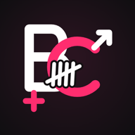

BodycountBodycount is a personal journal. It was built so that your data never leaves your phone.
Last updated: October 12, 2026
That's on purpose: what's in your journal is none of our business. Bodycount does not process any personal data on its own behalf.
The entries, notes, dates and settings you create are stored only on your phone, in the app's private storage, and encrypted (AES-256) with a key protected by your passcode. They are excluded from Google's automatic backups. Nobody but you can read them, not even the developer, who has no access to them.
Nothing leaves the app without you: you alone decide what you share, and with whom.
If you export a backup, the file is encrypted with a password only you know. We don't have it and can't recover it: without it, the file is unreadable to anyone.
You choose where to save it. We recommend keeping it somewhere of your own (your personal cloud such as Google Drive, iCloud or Proton Drive, a USB stick, your computer): since it's encrypted, it reveals nothing even if copied, and it lets you get your journal back if you change or lose your phone.
Bodycount is for adults only (18+). Entries may be about other people: they are only for your personal journal, stay on your phone and are never sent to anyone. By using the app, you agree not to share or publish this information, to write down the minimum (a first name or nickname is enough) and to delete an entry if the person concerned asks you to.
When you tap “Pick from my contacts”, Android opens its own picker; Bodycount only receives the name and number of the contact you choose (no access to the rest of your address book). If you tap “Birthday and city”, Android asks for permission to access contacts: Bodycount then reads only the birthday and city of the chosen contact, to offer to copy them into the entry (you tick what you keep). Nothing else is read, nothing leaves the phone, and you can revoke this permission at any time in Android settings. The name and number are encrypted in the app and only used for the Call / SMS / WhatsApp buttons, which open the matching app without sending anything on your behalf.
To unlock the app with your fingerprint or face. This data stays managed by Android; Bodycount never has access to it.
For haptic feedback.
If you choose “From a photo”, Android's camera or gallery opens; the photo is analyzed only on the phone (hair, skin and outfit colors…) to suggest an avatar, then forgotten. It is neither saved in the app nor sent; a photo taken with the camera goes through a private temporary file, erased on the next launch. No camera permission is requested.
A reminder 2 h before a date you logged (“Hey you! You’ve got a date!”) and the day after (“So, champ?”), with no name or details. Can be turned off in settings, off in discreet icon mode.
Since everything stays on your phone, you exercise your rights yourself, at any time:
As the developer holds no data, they can't access, recover or erase it on your behalf.
The testing reminder is just a memo and is not medical advice.
For any question: soaresden+bodycountapp@gmail.com